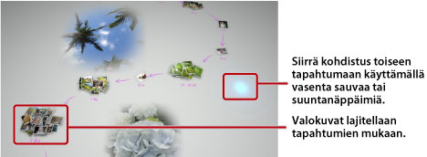

Valokuvien katseleminen
Kun käynnistät Photo Galleryn, kaikki PS3™-järjestelmän tallennustilaan tallennetut valokuvat analysoidaan ja ryhmitellään automaattisesti tapahtumien mukaan. Valokuvat ryhmitellään tapahtumiksi kuvauspäivän ja -kellonajan mukaan.
Tapahtumien valitseminen
Voit siirtyä valokuvasta toiseen tai tapahtumasta toiseen vasemmalla sauvalla tai suuntanäppäimillä. Voit valita useita valokuvia tai tapahtumia painamalla  -näppäintä kunkin valinnan aikana.
-näppäintä kunkin valinnan aikana.

Valokuvien näyttötavan vaihtaminen
Jos haluat vaihtaa valokuvien näyttötavan, valitse ryhmät tai tapahtumat ja paina sitten  -näppäintä. Näyttö vaihtuu seuraavien kuvien esittämällä tavalla. Voit palata edelliseen näyttöön painamalla
-näppäintä. Näyttö vaihtuu seuraavien kuvien esittämällä tavalla. Voit palata edelliseen näyttöön painamalla  -näppäintä.
-näppäintä.
Vihje
Kun valokuva näytetään koko näytön kokoisena, XMB™-näytön  (Kuvat) -luokan ohjauspaneelin näkyviin painamalla
(Kuvat) -luokan ohjauspaneelin näkyviin painamalla  -näppäintä. Sitten voit käsitellä näkyvää valokuvaa ohjauspaneelin asetuksilla.
-näppäintä. Sitten voit käsitellä näkyvää valokuvaa ohjauspaneelin asetuksilla.
Valokuvien katseleminen kuvaesityksenä
Jos haluat katsella kuvaesitystä, valitse [Kirjastoalue]-kohdasta soittolista tai tapahtuma, paina -näppäintä ja valitse  (Kuvaesitys). Tee esiin tulevassa näytössä seuraavat kuvaesityksen asetukset ja valitse sitten [Aloita].
(Kuvaesitys). Tee esiin tulevassa näytössä seuraavat kuvaesityksen asetukset ja valitse sitten [Aloita].
| Kuvaesityksen tyyli | Valitse, miten haluat kuvien näkyvän kuvaesityksessä. |
|---|---|
| Kuvaesityksen nopeus | Valitse kuvaesityksen nopeus. |
| Lajittele | Valitse valokuvien järjestys. |
| Kuvaesityksen musiikki | Valitse kuvaesityksen aikana soiva taustamusiikki Photo Gallery -sovelluksen mukana toimitetusta musiikkisisällöstä. |
 |
Valitse kuvaesityksen aikana soiva taustamusiikki XMB™-näytön  (Musiikki) -luokasta. (Musiikki) -luokasta. |
Vihjeitä
- Kuvaesityksen aikana saat (Kuvat) -luokan ohjauspaneelin näkyviin painamalla -näppäintä. Sitten voit käsitellä kuvaesitystä ohjauspaneelin asetuksilla.
- Kun kuvat näkyvät [Kirjastoalue]-kohdassa, voit lajitella kuvat kuvien samankaltaisuuden mukaan valitsemalla [Lajittele]-kohdasta [Samankaltaisuus].
Taustamusiikin vaihtaminen
Voit vaihtaa valokuvien katselun taustalla soivan musiikin. Tuo XMB™-näyttö esiin painamalla langattoman ohjaimen PS-näppäintä, siirry kohtaan (Musiikki) ja valitse soitettava musiikkitiedosto.
Vihjeitä
- Jos haluat vaihtaa kuvaesityksen taustamusiikin, valitse haluamasi musiikki ennen kuvaesityksen aloittamista.
- Kun Photo Gallery on käytössä ja musiikkiraidaksi valitaan tallennusvälineeseen taustamusiikiksi tallennettu raita ennen kuvaesityksen aloittamista, raita ei ehkä toistu uudelleen kuvaesityksen päätyttyä.